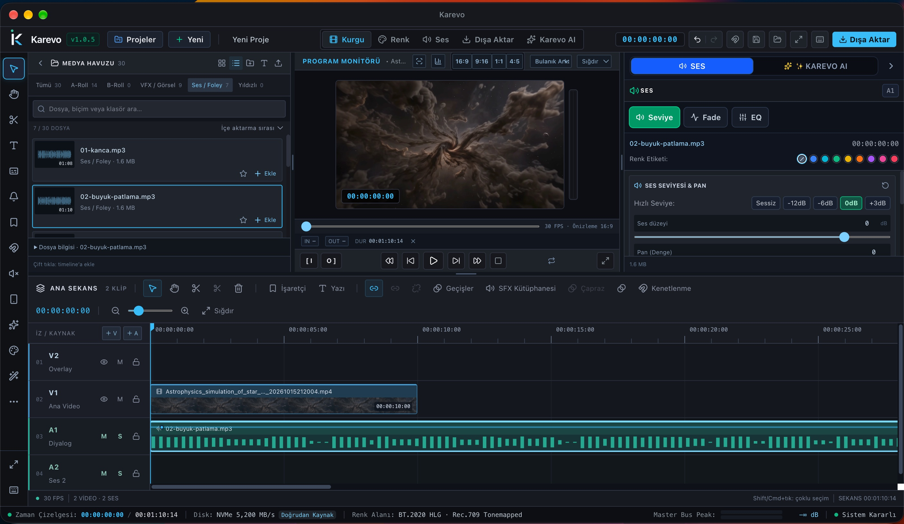
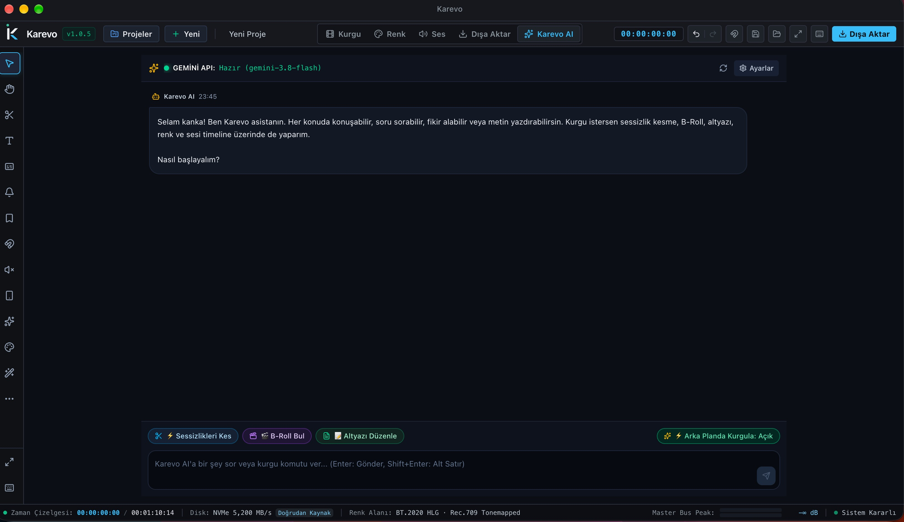
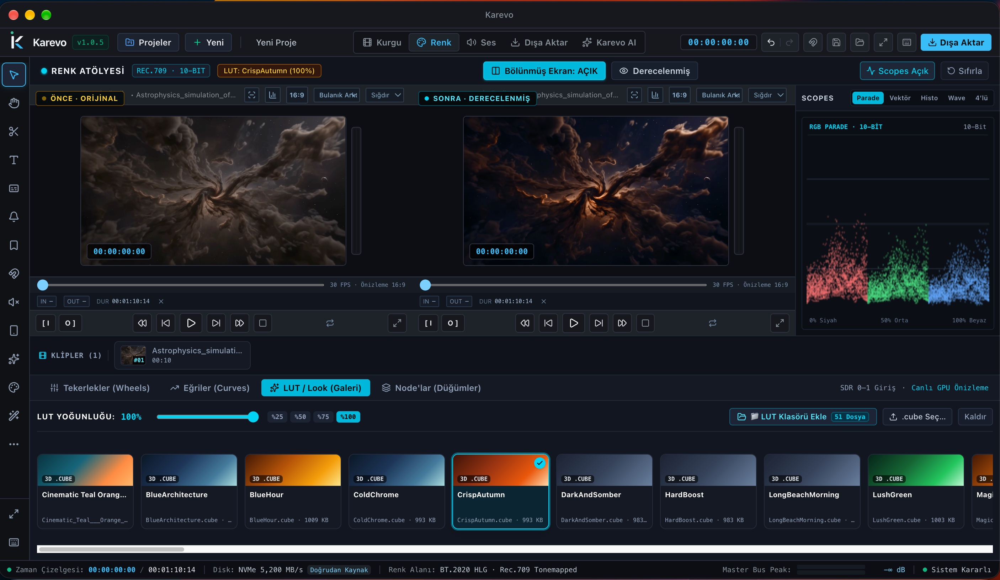
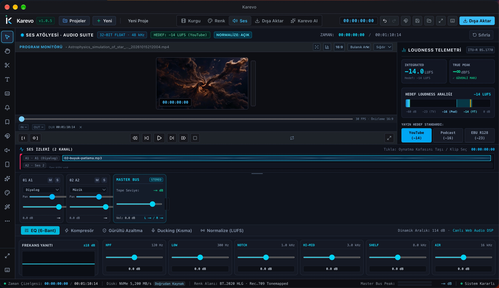
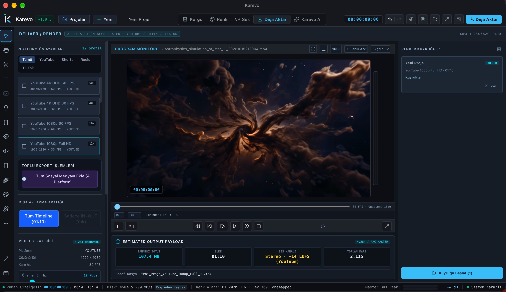

Kurgu & Timeline
Çok izli timeline, kenetlenme ve geçişler. Program monitörü aynı pencerede.
Küreye dokunun, bir komut yazın
Demo: hazır yanıtlar verir, gerçek bir yapay zekâya bağlı değildir.
Mac için yapay zekâ destekli video editörü. Arayüz Türkçe.
macOS · Apple Silicon · v1.0.5
Uygulama
Timeline, program monitörü ve medya havuzu.

Karevo AI
Her konuda sohbet eder. Kurgu komutlarını timeline'da uygular ve medya havuzunu görür.
Codex, Claude ve Gemini CLI'ları veya bir API anahtarıyla çalışır.
Medya havuzundaki videoyu ekle, sessiz yerleri kes

Renk
51 hazır .cube LUT galerisi ve LUT yoğunluğu. Renk tekerlekleri, eğriler ve node'lar. RGB Parade ve vektörskop.

Kaydırdıkça çizgi ilerler. Çizgiyi sürükleyerek karşılaştırın.
Ses
6 bantlı EQ, kompresör, gürültü azaltma ve ducking. LUFS normalizasyonu: YouTube −14, Podcast −16, EBU R128.


Dışa Aktar
YouTube, Shorts, Reels ve TikTok ön ayarları. 4K'ya kadar. Render kuyruğu ve toplu sosyal medya dışa aktarma. 16:9, 9:16, 1:1 ve 4:5 formatları, bulanık arka plan.
Ekranlar
Kurgu, renk, önizleme, ses, dışa aktarma ve AI.
Özellikler
Çok izli timeline, kenetlenme ve geçişler. Program monitörü aynı pencerede.
Klipleri arayın, süzün ve timeline'a ekleyin. Karevo AI medya havuzunu görür.
51 hazır .cube LUT, LUT yoğunluğu, renk tekerlekleri, eğriler, node'lar, RGB Parade ve vektörskop.
6 bantlı EQ, kompresör, gürültü azaltma, ducking ve LUFS normalizasyonu.
Görsel kimliğinizi projenin içinde hazır tutun.
YouTube, Shorts, Reels ve TikTok ön ayarları. 4K'ya kadar, render kuyruğu, toplu sosyal medya dışa aktarma. 16:9, 9:16, 1:1 ve 4:5, bulanık arka plan.
Sorular
Evet. Karevo Mac için ücretsiz olacak, indirme bağlantısı yakında bu sayfada.
Apple Silicon işlemcili Mac'lerde, macOS üzerinde çalışır.
Codex, Claude veya Gemini CLI'larından biri ya da bir API anahtarı. Karevo AI her konuda sohbet eder, kurgu komutlarını timeline'da uygular ve medya havuzunu görür.
Evet. Karevo'nun arayüzü Türkçe.
İndirme bağlantısı çok yakında burada olacak.